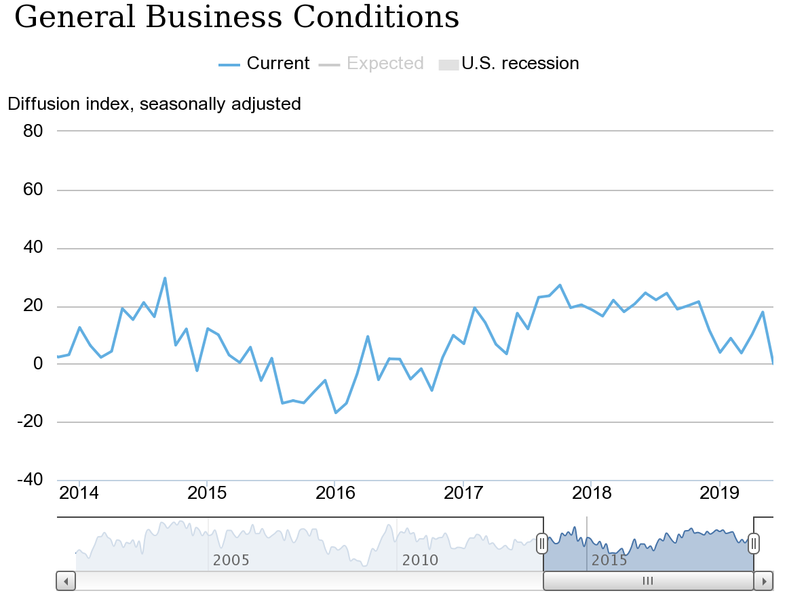
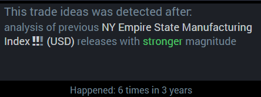
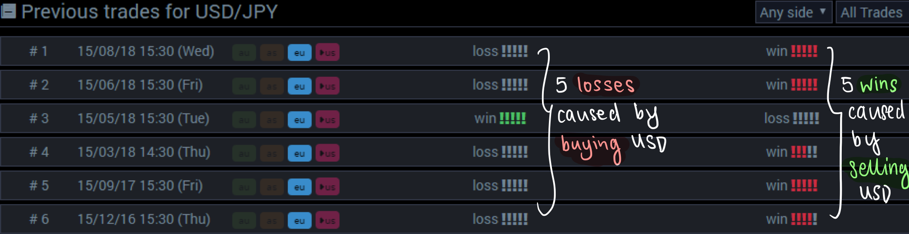
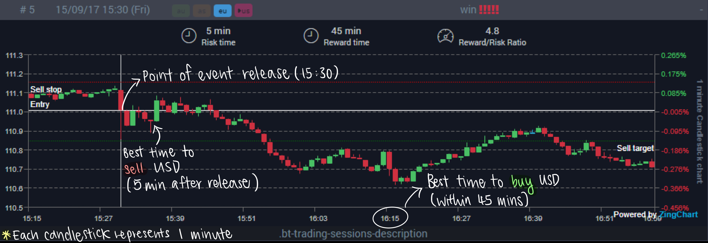
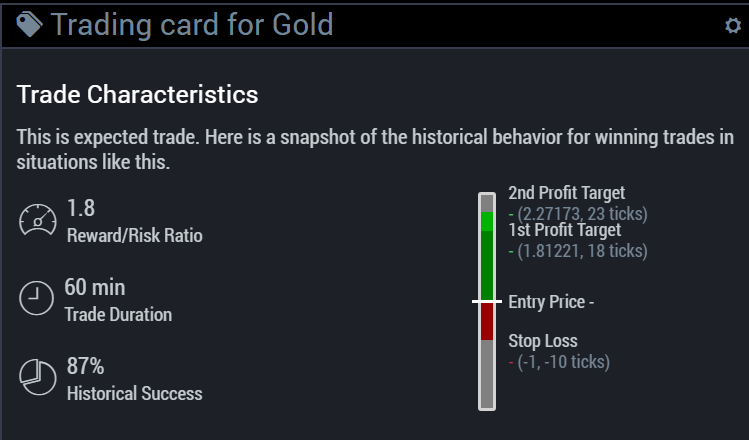
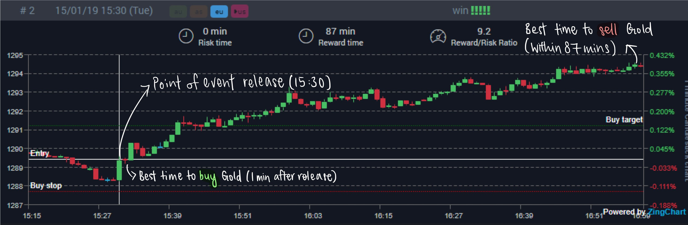
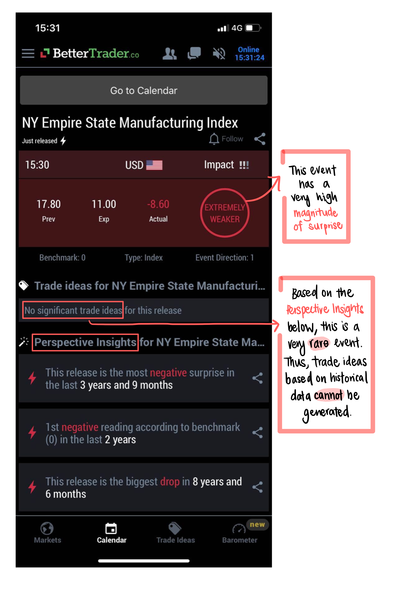

Overview
Economic event releases can have counterintuitive effects on related markets (as discussed in our case study on the impact of USD unemployment rate on the S&P500). Through this case study, we aim to explain how you can prepare for upcoming economic events. Planning your trades by considering possible scenarios related to the event release is essential to making a profitable trade. Let’s explore the example of the New York Empire State Manufacturing Index and its impacts on two markets: USD/JPY (Forex) and Gold (Commodities). Fig. 1 (click to enlarge the image) shows the NY Empire State Manufacturing Index over the past 5 years.
Fig. 1: NY Empire State Manufacturing Index (2014-2019)
Source: Federal Reserve Bank of New York
The Problem
Most traders may expect that a higher than expected (stronger) index would be bullish for the USD, while a lower than expected (weaker) index would be bearish for the USD. In general, “bullish” means that the USD is believed to appreciate in this situation, whereas “bearish” means that the USD would depreciate.
These predictions make perfect sense - a higher index and thus better business conditions generally spells stronger economic growth. A strong economy typically leads to higher interest rates, causing capital to flow into the US. Thus, the USD appreciates. Conversely, weaker economic growth leads to lower interest rates, causing foreign investors to move their capital into other countries to enjoy higher interest rates on their savings.
Another possible explanation arises when we consider export-led economic growth, in which case the USD would appreciate because foreign countries buy the dollar to pay for American products. Conversely, a lower index spells poorer business conditions and thus weaker economic growth. If export growth slows, the dollar is in lower demand and depreciates.
However, whilst the application of economic concepts makes logical sense, the markets are not always logical.
Let’s consider the USD/JPY Forex pair where the dollar is the base currency and the yen is the quote currency.
In the past 3 years, the NY Empire State Manufacturing Index released a stronger reading 6 times (see Fig. 2, click to enlarge the image). “Stronger” refers to the magnitude of surprise of the release calculated by BetterTrader’s algorithm.
Fig. 2: NY Empire State Manufacturing Index (2016-2019)
Source: BetterTrader
Fig. 3: 6 Trades for USD/JPY
Source: BetterTrader
Out of these 6 instances, 5 caused the USD to depreciate against the JPY, not appreciate. Shocking, isn’t it? Let’s look into one of these instances: September 2017 (see Fig. 4, click to enlarge the image).
Fig. 4: Impact of Stronger NY Empire State Manufacturing Index on USD/JPY
Source: BetterTrader
In this case, the eventual depreciation of the USD makes short-selling a profitable venture. Selling the USD/JPY pair within 5 minutes of the event release and buying to cover within the next 40 minutes makes for a profitable trade. A trader that expects the USD to appreciate would hold onto their dollars only to realize that they just missed out on a lucrative deal.
What about when the index release is lower than expected (weaker)?
Let’s consider a commodity this time and look at the index’s impact on Gold.
Over the last 3 years, the NY Empire State Manufacturing Index was weaker 9 times, and 8 of these instances had significant impact on Gold. The price of Gold went up 87% (7 out of 8) of the time, with an average trade duration of 60 minutes (see Fig. 5, click to enlarge the image). Referring to Fig. 6 (click to enlarge the image), we see that the price of Gold went up by 0.4% steadily over a period of 87 minutes.
Fig. 5: Trading Card for Gold
Source: BetterTrader
Fig. 6: Impact of Weaker NY Empire State Manufacturing Index on Gold
Source: BetterTrader
This time, trading Gold by buying at the entry price one minute after the event release (opening Long position) and selling Gold before the 87 minute mark (closing the Long position) leads to a profitable trade. In this scenario, the market reacts logically, unlike in the case of USD/JPY. When business conditions are poor, investors tend to buy Gold as a form of insurance asset, also known as a risk-off asset. Thus, the issue here is not about determining the price direction of Gold as most would expect it to rise. Instead, we are concerned about Gold’s potential to rise and at which point we would be able to make the most profit.
The above examples of USD/JPY and Gold show us that historical analysis is crucial in making a profitable trade. But how can we access such data before the event releases? This is where our BackTester comes into play.
The BackTesting Solution: Plan Your Trades and Trade Your Plan to Maximize Gains and Minimize Loss
The BackTester allows traders to analyze relevant statistics for every upcoming economic event. Imagine this: you are a trader anticipating the monthly release of the NY Empire State Manufacturing Index or any other significant event release. With the BackTester, you would be able to prepare for hours or even days before.
BackTesting allows you to devise several trading strategies, maximizing your reaction speed. If the release is “stronger”, you would know to sell the USD/JPY pair, whereas if the release is “weaker”, you would buy Gold. Knowing the average reward times would also help you decide exactly when to buy the USD/JPY pair and sell Gold. Hence, our BackTester gives you the edge you need to profit from economic events, preventing you from going into the trade blind like other traders are.
Besides aiding you in knowing what to trade, our Trade-Ideas let you know when you should not trade something. For instance, the recent release of the NY Empire State Manufacturing Index (June 2019) was “extremely weaker”, meaning it had a very high magnitude of surprise and indicated poor economic performance (see Fig. 7, click to enlarge the image). In this case, our algorithm was unable to devise Trade-Ideas because of a lack of similar releases, seeing as it was the first negative reading in the past 2 years (see Fig. 7, click to enlarge the image). Hence, the advice here is to avoid unfounded speculations and to abstain from trading based on this release.
Fig. 7: NY Empire State Manufacturing Index (June 2019)
Source: BetterTrader
The Results
Overall, our BackTester and Trade Ideas help you create a master trading strategy, so you can discern viable trading opportunities from potential losses long before the release of the economic event.
Traders that used our BackTester and Trade Ideas saw immediate results:
- 22% average increase in success rate.
- 40% average fall in losses.
Clients that used our BackTester were also found to have:
- 37% average increase in confidence in their trading strategies.
- 164% average increase in the ability to identify profitable trading opportunities.
As the saying goes: if you fail to plan, you plan to fail. BetterTrader offers you a platform to plan out the perfect trading strategy for any economic event of every magnitude. We help you make lucrative trades by keeping you on the right side of a trade and by keeping you out of unprofitable ones. Arm yourself with our unparalleled analytics and succeed!
About NY Empire State Manufacturing Index
An index derived from a survey of 200 manufacturers in New York state conducted by the Federal Reserve Bank of New York. It indicates the general business condition in New York state. A level above 0 indicates improving business outlooks whilst a level below 0 indicates worsening outlooks.
Type: Economic Event
Frequency of releases: Monthly
Location: NY, United States
Analysis tool: Trade Ideas, The BackTester
Instruments: USD/JPY, Gold
Start earning with BetterTrader today
Equip yourself with accurate, cutting-edge technology to stay ahead of the game.
GET STARTED FOR FREE